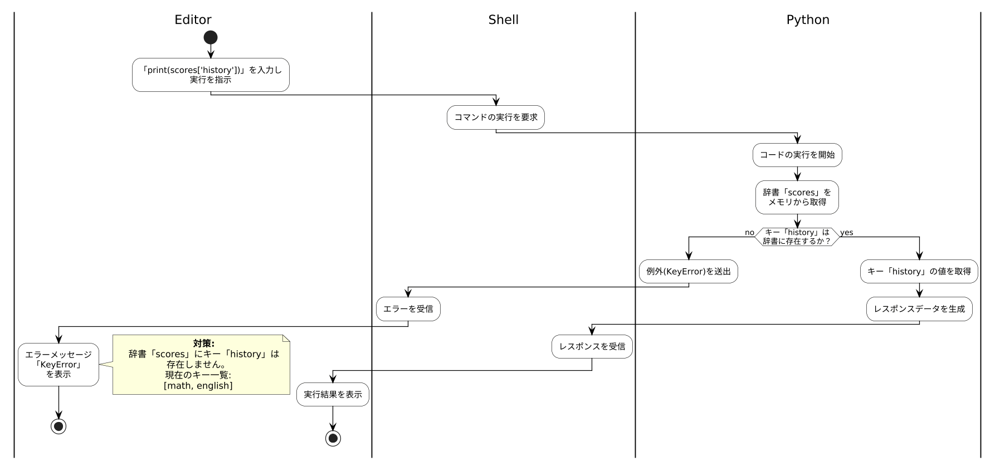

scores = {"math": 90, "english": 85, "science": 78}
print(scores["history"])Traceback (most recent call last):
File "main.py", line 2, in <module>
print(scores["history"])
KeyError: 'history'
辞書 scores にキー history は存在しません。存在するキーは math，english，science です。